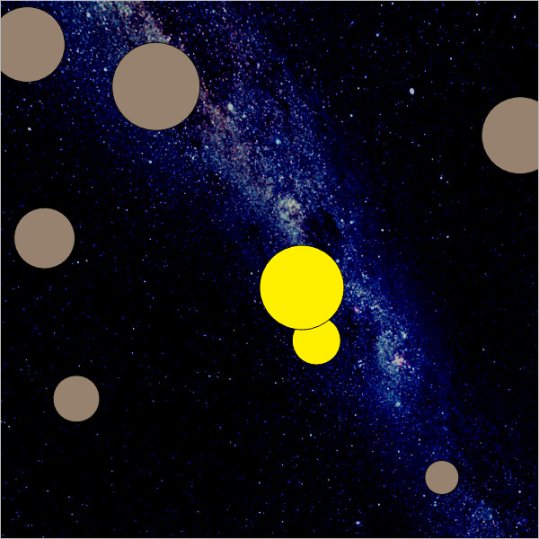
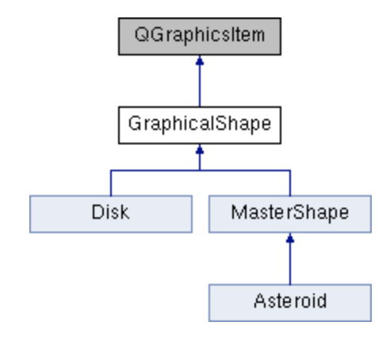
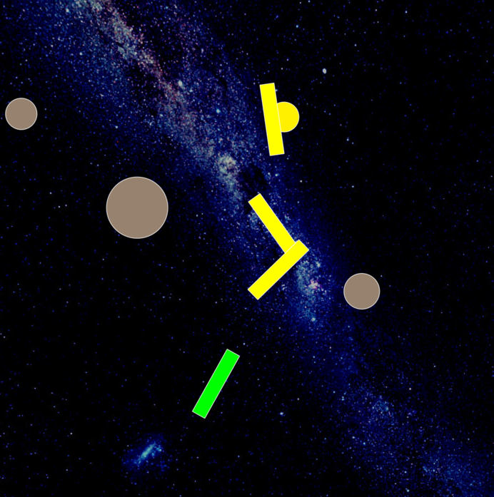
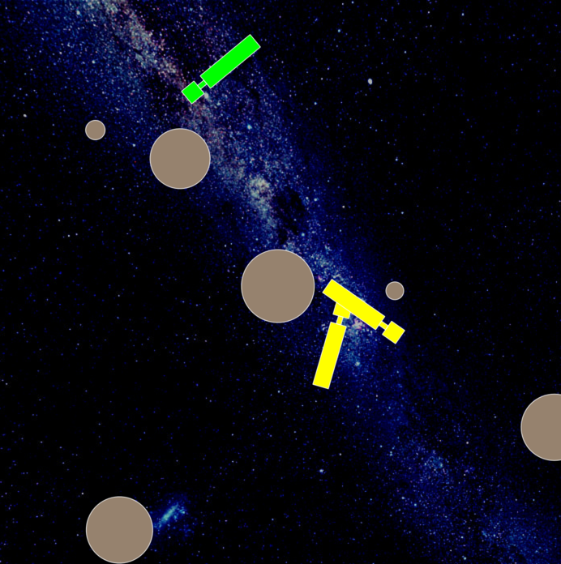
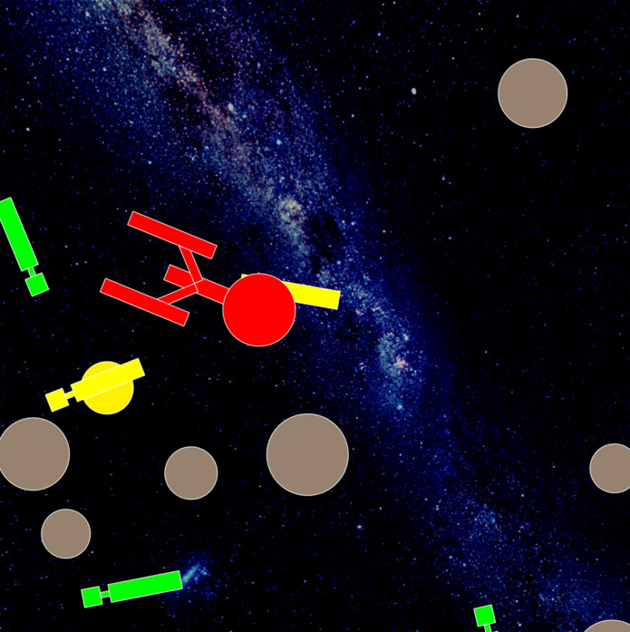
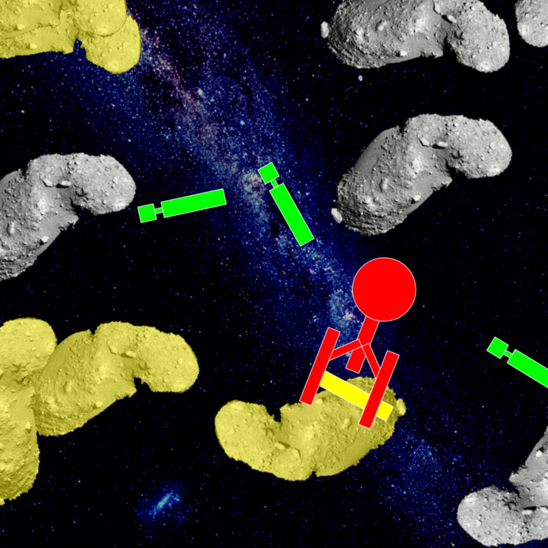

|
INFO702 - TPs
|
L'objectif de ce TP est de vous familiariser avec la programmation objet classique en C++. L'idée est de partir d'une base de code déjà conséquente et de l'enrichir progressivement. Le focus est sur le polymorphisme (donc les méthodes virtuelles). Le prétexte est de vous faire travailler sur un programme graphique temps réel, qui gère plein d'objets différents dont on devra détecter les collisions.
La généricité se fera donc au travers du polymorphisme. À l'issue de cette séance, vous maîtriserez:
Les sites suivants pourront être utiles pendant le TP:
make démarre le TP en 5 minutes.std::ios::binary à l'ouverture des fichiers)On vous donne une archive avec quelques fichiers tout prêts:
Pour compiler un projet Qt, on utilise qmake, qui va créer un fichier Makefile, puis make. Vérifiez la version avec qmake -v (ou qmake6 -v). Le fichier .pro active C++17. Si vous avez installé Qt dans un répertoire exotique, il faut donner le chemin complet de qmake. Ensuite tout est bien configuré.
$ qmake6 collider.pro # ou le chemin du qmake de Qt6 $ make $ ./collider # sous Linux $ ./collider.app/Contents/MacOS/collider # sous MacOS
Normalement, vous avez un programme qui vous affiche quelque chose du genre ci-dessous:

Prenez le temps de regarder le code fourni (en commençant par collider.cpp, puis objects.hpp et objects.cpp) et éventuellement chercher quelques explications dans la doc Qt doc Qt5 doc Qt6.
On notera la hiérarchie suivante pour nos formes graphiques (cf. class GraphicalShape):

Évidemment, Qt offre déjà pas mal de choses dans la classe QGraphicsItem, mais nous allons faire nos propres formes graphiques avec algorithme randomisé de détection de collisions.
GraphicalShape::isInside et GraphicalShape::randomPoint.Chaque objet possède un repère local, dans lequel Qt le dessine, et un repère parent, dans lequel il est assemblé aux autres formes. Les deux services de collision de GraphicalShape suivent une même convention :
| Service | Contrat |
|---|---|
QPointF randomPoint() const | Retourne un point appartenant à la forme, exprimé dans son repère PARENT. Le tirage n'est pas nécessairement uniforme dans un assemblage. |
bool isInside(const QPointF& p) const | Indique si p appartient à la forme ; p est exprimé dans son repère PARENT. |
Disk, Rectangle, ImageShape et Union ne portent aucune transformation Qt propre : leurs repères local et parent coïncident. Une Union délègue donc directement à ses composantes, même si une composante est une Transformation. C'est cette dernière qui applique sa transformation dans randomPoint et sa transformation inverse dans isInside. Les conteneurs peuvent s'imbriquer : chacun traite uniquement sa propre transformation, une seule fois.
MasterShape fait de même pour la position et la rotation du maître. Tous les maîtres sont à la racine : leur repère parent commun est la scène. LogicalScene peut donc comparer directement les formes avec f2->isInside(f1->randomPoint()), sans conversion supplémentaire.
setPos ou setRotation sur une primitive ou une Union. On se limite aux rotations de centre (0,0) et aux translations, sans échelle, cisaillement ni autre transformation Qt. Les conversions nécessaires sont calculées à la main par ces deux classes ; Qt assure l'affichage. Les auxiliaires toParent et toLocal fournis dans MasterShape ne font pas partie de l'interface GraphicalShape. Vous pourrez en écrire de semblables dans Transformation, sans ajouter de conversion dans Union ou LogicalScene.Contrairement aux services de collision, boundingRect retourne TOUJOURS une boîte dans le repère LOCAL de l'objet Qt. Elle doit contenir sa forme et sa peinture ; elle n'a pas besoin d'être minimale. La position et la rotation propres à l'objet ne doivent pas être appliquées à sa boîte locale. Pour englober une fille, il faut en revanche exprimer sa boîte dans le repère de son parent. Les consignes ci-dessous explicitent cette distinction pour chaque classe.
La fonction auxiliaire fournie boundingRectInParent(f) renvoie une boîte conservatrice dans le repère parent de f. Si B est sa boîte LOCALE, R la plus grande norme d'un de ses quatre coins et d sa position Qt, elle renvoie le carré centré en d de demi-côté R. Ce carré contient la boîte tournée pour n'importe quel angle. La fonction lit uniquement boundingRect et pos, sans utiliser les services de collision ni ajouter de conversion de points. Elle peut surestimer fortement les boîtes, mais évite que les boîtes des ancêtres changent lors des rotations animées. Les translations des composantes et les dimensions des primitives restent constantes après ajout à la scène.
Pour Disk, la boîte locale fournie est [-r,r] × [-r,r]. Pour MasterShape, l'implémentation fournie englobe la fille avec boundingRectInParent(_f), dans le repère local du maître ; elle n'y ajoute ni sa position ni sa rotation dans la scène. Le déplacement du maître ne change donc pas sa boîte locale.
Pour chaque nouveau maître, effectuez les deux enregistrements, comme pour les astéroïdes : ajout à QGraphicsScene et ajout à logical_scene->formes. Les formes composantes sont reliées par setParentItem ; ne les ajoutez pas séparément comme objets maîtres.
Vous allez définir deux classes. D'abord une classe Rectangle, qui, sur le modèle de Disk, hérite de GraphicalShape. Elle représente un rectangle quelconque. Pour afficher un rectangle avec Qt, on utilise la méthode QPainter::drawRect. N'oubliez pas de redéfinir toutes les méthodes abstraites (i.e. virtuelles pures) héritées par GraphicalShape. Pour les formes peintes avec un contour, inclure celui-ci dans la boîte, ou utiliser painter->setPen(Qt::NoPen) comme pour Disk.
lo et hi sont les coins de coordonnées respectivement minimales et maximales du rectangle, dans son repère local. On impose lo.x() < hi.x() et lo.y() < hi.y() : les dimensions sont strictement positives. Vous pouvez vérifier cette précondition avec assert.Pour Rectangle::boundingRect, retournez le rectangle de coins lo et hi, par exemple QRectF(lo,hi). Il est déjà dans le repère local requis par Qt, qui coïncide ici avec le repère parent. N'ajoutez pas la position du maître.
Pour vous contrôler, vérifiez que les points produits par randomPoint() sont reconnus par isInside(), et testez aussi des points hors du rectangle.
Vous ferez ensuite une classe SpaceTruck, qui hérite de MasterShape, et dont la représentation graphique est un rectangle vert, qui devient jaune lors d'une collision. Au niveau des mouvements, il se déplacera en avant et en tournant à droite en permanence. On utilisera opportunément les méthodes héritées de QGraphicsItem, QGraphicsItem::rotation et QGraphicsItem::setRotation, pour faire ce mouvement dans SpaceTruck::advance.
Vous pouvez choisir un constructeur SpaceTruck(double speed, double angle) et mémoriser ses paramètres dans _speed et _angle. La vitesse est en pixels par appel et l'angle en degrés par appel, pas par seconde. Dans le repère écran usuel de Qt, un angle positif apparaît dans le sens horaire.
advance en deux phases, avec step == 0 puis step == 1. Dans ce TP, effectuez les mises à jour seulement pour step == 1, comme dans Asteroid, et appelez la méthode de MasterShape pour les bords et collisions.Voilà un résultat possible avec 10 astéroïdes, 5 space trucks de taille 100x20.

SpaceTruck hérite de boundingRect dans MasterShape : ne lui ajoutez pas de nouvelle conversion. La même règle s'applique à Enterprise et NiceAsteroid.
this->setGraphicalShape sur cet objet graphique._angle est l’incrément angulaire par image, en degrés.SpaceTruck::advance. Le principe pour avancer tout droit est de faire un point (speed,0) (donc un peu à l'"avant" de la forme qui est centrée en (0,0)), et de demander les coordonnées correspondantes dans le repère du parent grâce à votre service toParent. Comme on change la position via setPos, ça déplace l'astéroïde.On va fabriquer des formes plus complexes par assemblage de formes simples. Pour ce faire on va créer une forme graphique Union, qui hérite de GraphicalShape, et dont le seul rôle est de grouper deux GraphicalShape. On note les points suivants:
Union::randomPoint : il faudra tirer une fois sur deux un point dans la forme 1 et un point dans la forme 2. Le plus simple est d’utiliser rand01() < 0.5 pour choisir la première forme, et la seconde sinon. Une solution plus évoluée est de calculer les aires A1 et A2 des boîtes englobantes des deux formes, et de demander un point dans la forme 1, si rand01() < A1/(A1+A2), sinon de demander le point dans la forme 2. Ces stratégies ne donnent généralement pas une distribution uniforme dans l'union ; elles suffisent ici pour la détection aléatoire. Retournez directement le point produit par la fille choisie : son contrat le place déjà dans le repère de l'union.Union::isInside il faudra bien tester si le point appartient à une des formes. Transmettez le même point p aux deux filles, sans conversion : leur repère parent est précisément le repère de l'union.Union::boundingRect on note que Qt donne un operator| sur les QRectF pour calculer le rectangle englobant de deux rectangles. Utilisez la fonction fournie boundingRectInParent sur chaque fille avant de réunir les deux boîtes. Le résultat est dans le repère LOCAL de Union. Ne réunissez pas directement les boundingRect des filles : une fille Transformation peut avoir une boîte locale située ailleurs que sa forme dans l'union. Union ne porte pas de transformation propre ; ses services de collision délèguent directement à ses composantes.dans Union::Union il faut préciser à Qt la hiérarchie d'objets graphiques pour qu'il s'occupe de leur affichage. On utilisera setParentItem ainsi:
Union::paint(...) est alors définie, mais ne contient pas de code, car Qt (grâce à setParentItem) peut aller chercher tout seul les autres objets graphiques.On pourra ensuite mettre à jour SpaceTruck pour qu'il soit composé de formes simples différentes. Remplacez la construction du rectangle initial dans son constructeur par celle du nouvel assemblage : conservez un seul appel à setGraphicalShape, à la fin. Ne laissez pas un premier appel suivi d'un second ; la base demande un appel unique avant ajout à la scène.
Pour vous contrôler, testez un point dans chaque composante et un point dans le vide entre elles ; tous les points tirés doivent appartenir à l'union. Le choix équiprobable à chaque nœud ne donne pas des probabilités égales aux feuilles : pour Union(d1, Union(d2,d3)), elles valent 1/2, 1/4 et 1/4. Cela suffit ici. La pondération par les aires des boîtes reste une heuristique ; même les aires exactes ne garantissent pas l'uniformité en cas de recouvrement.

Pour composer des formes complexes, il nous reste à nous donner des transformations géométriques pour pouvoir tourner et placer nos formes. On va définir une classe Transformation, qui prendra en paramètre un GraphicalShape f, un vecteur de déplacement dx et un angle de rotation angle:
Le conteneur Transformation porte lui-même la translation et la rotation. Sa fille reste dans son repère local, sans transformation Qt supplémentaire, sauf s'il s'agit elle-même d'un autre conteneur Transformation imbriqué.
_f, le déplacement _dx et l'angle _angle en degrés. Reliez la fille par _f->setParentItem(this). Appelez this->setPos(dx) et this->setRotation(angle) pour l'affichage Qt. N'appliquez pas ces mêmes opérations une seconde fois à la fille.toParent et toLocal, pour calculer vous-même la translation et la rotation. Ils ne redéfinissent aucune méthode de GraphicalShape. Pour p local, q parent et \( d=(d_x,d_y) \), posez \( \theta=\mathrm{angle}\,\pi/180 \). Alors :\[ \mathrm{toParent}(p)=R_\theta p+d,\qquad \mathrm{toLocal}(q)=R_{-\theta}(q-d). \]
En coordonnées, avec \( c=\cos\theta \) et \( s=\sin\theta \) :
\[ \mathrm{toParent}(x,y)= (cx-sy+d_x,\;sx+cy+d_y), \]
\[ \mathrm{toLocal}(u,v)= (c(u-d_x)+s(v-d_y),\;-s(u-d_x)+c(v-d_y)). \]
Dans le sens direct, on tourne puis on translate. Dans le sens inverse, on soustrait d puis on applique la rotation inverse. Utilisez std::sin et std::cos avec des radians ; par exemple, pi peut être obtenu par std::acos(-1.0).
randomPoint tire un point dans la fille puis lui applique la transformation directe T : le résultat est ainsi dans le repère PARENT du conteneur. Le point de la fille était déjà dans le repère LOCAL du conteneur.isInside reçoit un point dans le repère PARENT du conteneur, lui applique la transformation inverse, puis demande à la fille s'il lui appartient. La fille reçoit donc un point dans son propre repère parent, comme prévu. Union et LogicalScene n'ajoutent aucune conversion avant ou après ces appels.Transformation::boundingRect, utilisez boundingRectInParent(_f). Cette boîte englobe la fille dans le repère LOCAL du conteneur. Ne lui appliquez PAS la translation dx ni la rotation du conteneur : Qt s'en charge pour l'affichage. Si la fille est une Transformation imbriquée, la fonction auxiliaire tient compte de sa position et englobe toutes ses rotations. En revanche, le parent du conteneur utilisera boundingRectInParent sur celui-ci pour l'englober dans son propre repère. Cette convention conserve des boîtes fixes lors des rotations animées. Terminez les assemblages avant ajout à la scène et ne modifiez ensuite ni les dimensions des primitives ni les translations des composantes.paint reste vide : Qt dessine les enfants.Ajoutez les accesseurs angle() et setAngle(a). Le second met à jour _angle ET appelle setRotation(a) sur le conteneur pour synchroniser calculs et affichage. Si vous mémorisez sinus et cosinus pour accélérer les conversions, recalculez-les aussi à chaque changement d'angle. Ne changez pas directement la rotation Qt sans mettre à jour les données utilisées par les conversions.
isInside reconnaît les points produits par randomPoint, y compris pour deux transformations imbriquées, et comparez à l'affichage. Chaque conteneur applique sa propre transformation exactement une fois ; son repère parent n'est pas forcément la scène.Pour vous contrôler, transformez le rectangle [-5,5] × [-2,2] par une rotation de 90 degrés suivie d'une translation (20,10) : le point (20,14) est dedans et le point (24,10) est dehors. Essayez ensuite deux transformations imbriquées. L'ordre compte : translater une forme puis la tourner autour de l'origine ne donne généralement pas la même chose que tourner puis translater.
\( x' = x * \cos(a) - y * \sin(a), \qquad y' = x * \sin(a) + y * \cos(a) \).
On pourra alors s'amuser à faire des objets plus complexes en composant nos formes. On pourra ainsi créer un vaisseau spatial sous la forme d'une classe Enterprise qui hérite de MasterShape. On choisira une couleur grise pour le vaisseau et rouge en cas de collision.
Le code suivant vous place les éléments graphiques dans le constructeur de Enterprise:
On pourra ensuite s'amuser à faire des déplacements un peu plus aléatoires pour le vaisseau. Vous devriez avoir maintenant une application qui ressemble à ça:

En fait, on peut étendre le principe précédent à des images quelconques. L'idée est la suivante:
QPixmap de l'image, on fabrique un QBitmap qui est son masque plein/vide.isInside) lorsqu'il tombe dans un pixel plein du masque.Pour charger une image, il suffit de déclarer un QPixmap et de lui donner un nom de fichier listé dans les ressources (cf collider.qrc). On utilisera le format GIF qui peut stocker de la transparence.
On écrira donc ensuite une classe ImageShape qui hérite de GraphicalShape. On la construit en lui donnant un QPixmap et un MasterShape. On suppose qu'elle occupe les coordonnées (0,0) -> (w,h), avec la convention [0,w) × [0,h), où w et h sont ses dimensions. Les indices des pixels vont de 0 à w-1 et de 0 à h-1. ImageShape ne porte pas de transformation propre : ses services de collision utilisent directement ces coordonnées. Pour ImageShape::boundingRect, retournez QRectF(0,0,w,h), la boîte LOCALE qui contient toute l'image dessinée. C'est le centrage et la rotation des conteneurs qui placeront ensuite l'image, sans modifier ce rectangle local.
Le QBitmap _mask servira lors des affichages de collision. C'est une structure optimisée pour l'affichage. Le QImage _mask_img est quant à lui optimisé pour les requêtes pixel par pixel et servira pour ImageShape::randomPoint et ImageShape::isInside.
Écrivez ces méthodes selon le principe explicité ci-dessus. On utilisera la méthode QImage::pixelIndex qui retourne 0 sur du vide et 1 sur du plein.
_mask_img.pixelIndex(p) fonctionne si le QPoint p est à l'intérieur de l'image. Dans la méthode ImageShape::isInside, on vérifie donc d'abord si le point est dans la boîte englobante de l'image ImageShape::boundingRect avant de tester si ce point touche un pixel du masque de l'image. Vérifiez explicitement 0 <= x < w et 0 <= y < h, puis utilisez floor pour convertir les coordonnées en indices. Le tirage doit utiliser une image chargée, non vide, contenant au moins un pixel plein ; sinon la boucle de rejet peut ne pas finir. N'utilisez pas QPointF::toPoint() pour obtenir les indices : cette méthode arrondit les coordonnées. Le point tiré doit être réel, dans une cellule opaque, pas seulement placé au centre ou au coin d'un pixel. Pour ce TP, utilisez les images à leur résolution native (devicePixelRatio = 1).Pour l'affichage, on peut utiliser le code suivant:
Il ne reste plus qu'à faire une classe NiceAsteroid qui s'occupe de créer un joli astéroïde tournant sur lui-même. Il aura besoin de deux transformations t1 et t2. La première s'occupe de ramener l'image au centre (car celle-ci est entre les coordonnées (0,0) et (largeur,hauteur)). La deuxième s'occupe juste de la rotation.
Faites hériter NiceAsteroid directement de MasterShape : Asteroid construit déjà un disque et appelle déjà setGraphicalShape. L'assemblage à réaliser est le suivant : l'image est la fille de t1, qui la translate de (-w/2,-h/2) ; t1 est la fille de t2, qui effectue la rotation autour de l'origine ; t2 est la fille du maître. Utilisez w/2.0 et h/2.0 pour les demi-dimensions. Le centrage concerne la boîte de l'image, pas le barycentre de ses pixels pleins. Le cap du maître détermine son déplacement ; l'angle de t2 détermine sa rotation propre. Les deux mouvements sont indépendants.
Dans NiceAsteroid::advance on augmentera régulièrement l'angle de la transformation t2, stockée dans la donnée membre _t ci-dessous (un pointeur observateur de type Transformation*) :
Transformation::setAngle et Transformation::angle pour lire/changer l'angle d'une transformation.Vous devez avoir maintenant quelque chose qui ressemble à ci-dessous, en ayant remplacé les Asteroid par des NiceAsteroid.

Vous avez toute une base pour développer un petit jeu ou des petites animations. On peut citer les développements suivants:
N'hésitez pas à me poser des questions si vous ne voyez pas comment démarrer.
TP-XXX-YYY.* où XXX et YYY désignent les noms respectifs des étudiants du binôme.